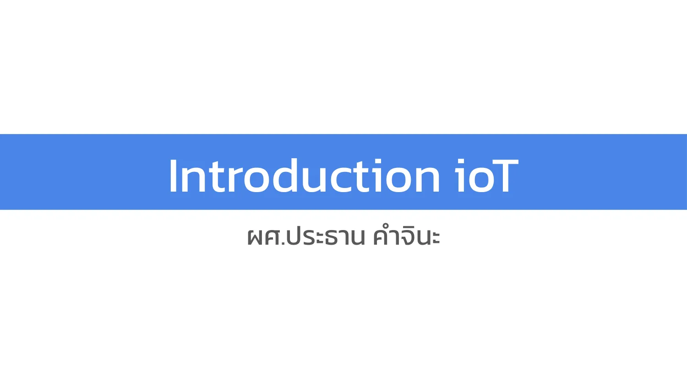

🔍 ขยายภาพสไลด์
สไลด์ที่ 1 / 34
บทที่ 01: บทนำและสถาปัตยกรรม
📌 Introduction ioT
ผศ.ประธาน คําจินะ
💡 คำอธิบายเชิงลึกและสาระสำคัญของภาพสไลด์:
สไลด์หน้าปกรายวิชา: COM3708 ระบบอินเทอร์เน็ตของสรรพสิ่ง (Internet of Things) โดย ผู้ช่วยศาสตราจารย์ประธาน คําจินะ